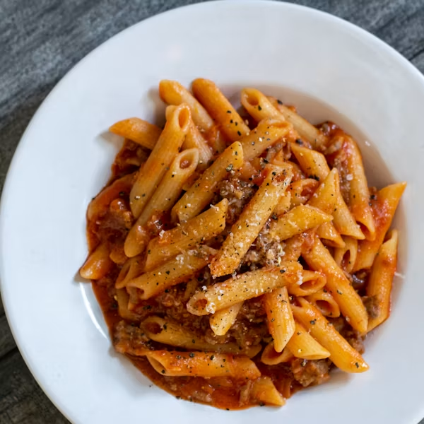

Home
Recipe for Pasta

Description
Pasta is a staple food of Italian cuisine, made from unleavened dough of wheat flour mixed with water or eggs.
It comes in various shapes and sizes, such as spaghetti, penne, fusilli, and lasagna.
Pasta can be served with a variety of sauces, including tomato-based sauces, cream sauces, and pesto.
It is often accompanied by vegetables, meats, or seafood, making it a versatile and satisfying dish.
Ingredients
- Pasta of choice (spaghetti, penne, fusilli, etc.)
- Water
- Salt
- Olive oil
- Sauce of choice (tomato sauce, Alfredo sauce, pesto, etc.)
- Grated cheese (optional)
- Fresh herbs (like basil or parsley) for garnish (optional)
Procedures
-
Cook the pasta
- Bring a large pot of water to a boil. Add a generous amount of salt to the boiling water.
- Add the pasta to the boiling water and cook according to the package instructions until al dente.
- Drain the pasta and toss it with a little olive oil to prevent sticking.
-
Prepare the sauce
- While the pasta is cooking, prepare your sauce of choice in a separate pan.
- If using a tomato-based sauce, sauté garlic and onions in olive oil, then add crushed tomatoes and seasonings.
- If using a cream-based sauce, melt butter in a pan, add cream, and season with salt, pepper, and herbs.
-
Combine and serve
- Toss the cooked pasta with the prepared sauce until well coated.
- Serve hot, garnished with grated cheese and fresh herbs if desired.